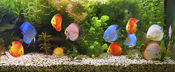
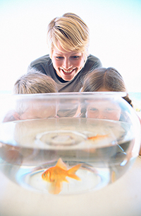
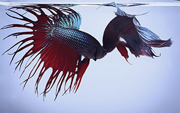
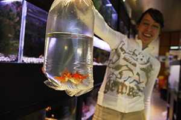
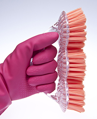
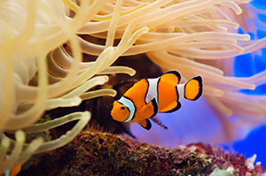
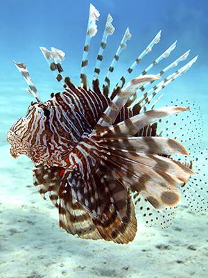

Fish
 ShareCompartir
ShareCompartir
Credit: CDC thanks Michael Stoskopf, DVM, PhD, Diplomate, American College of Zoological Medicine, and an aquatic medicine specialist at the North Carolina State University College of Veterinary Medicine, for his careful review of these pages.
From their brightly colored, shiny scales to their relatively easy care, aquarium fish are popular as pets. In fact, millions of households in the United States keep aquarium fish. Fish are great pets for people with pet allergies and have shown to produce calming effects and to reduce stress among people who keep them.
Like all animals, fish may carry germs that make people sick. These germs can also contaminate the water in which fish live.
Although fish and aquarium water can spread germs to people, illness due to keeping fish is rare. By giving routine care to your fish and their aquarium as well as following some simple health tips you are less likely to get sick from touching, feeding, or owning aquarium fish.
The most common diseases associated with aquarium fish that can cause human illness are:
Aeromonas spp.
Aeromonas is a type of bacteria that is commonly found in fresh water ponds and aquariums. This germ can cause disease in fish and amphibians. Aeromonas can cause discoloration of the limbs of amphibians and fins of fish. It can also cause internal bleeding in these aquatic animals.
People can become infected through open wounds or by drinking contaminated water. Young children and adults with weak immune systems are most commonly affected and may have diarrhea or blood infections.
Maintaining good water quality in aquariums, promptly removing dead fish, and practicing healthy habits, including hand washing, will reduce the risk of Aeromonas infection.
Mycobacterium marinum
Mycobacterium marinum is a type of bacteria that causes disease in fish, reptiles, and amphibians. This germ is found in fresh water ponds and aquariums. It is spread to people and animals through contaminated aquarium water. All fish are susceptible to mycobacteriosis. This disease is typically slow growing in fish but can affect some fish more quickly. Affected fish may show no signs of illness or may stop eating, lose their fins or scales, develop sores, or appear deformed.
People can become infected with Mycobacterium marinum by having direct contact with infected animals or contaminated water (for example, contaminated ponds or aquariums). The most common sign of infection is development of a skin infection. In very rare cases, the bacteria can spread throughout the body systems. Infections progress slowly and may get better on their own. In some instances, antibiotics and surgical wound treatments are required to prevent deep infection.
Salmonella spp.
Salmonella is a type of bacteria that spreads to people and animals through contaminated food or contact with the stool or habitat of certain animals, including fish. An animal’s aquarium or terrarium may also be a source of Salmonella. Fish carrying Salmonella often do not show any signs of disease. Aquariums that contain reptiles or amphibians in addition to fish are at a higher risk for having Salmonella.
People infected with Salmonella might have diarrhea, vomiting, fever, or abdominal cramps. Infants, elderly persons, and those with weakened immune systems are more likely than others to develop severe illness.
Streptococcus iniae
Streptococcus iniae is a type of bacteria that causes serious disease in fish. Fish dying from streptococcal disease often have a disoriented, whirling motion at the water surface, hence the common name of “mad fish disease.” Fish affected by this disease may have small red areas on their skin, and may develop a swollen abdomen and bulging eyes.
People, especially those with open skin abrasions or scrapes, could get infected by Streptococcus iniae bacteria while handling fish or cleaning aquariums. Affected people usually develop a skin infection at the site of open cuts or scrapes. Though rare, more serious illness can happen in people with weakened immune systems.
In this section
Healthy habits
CDC recommends washing your hands before and after you work with aquariums or handle fish.
- Always Wash your hands thoroughly with soap and running water before and after handling or cleaning aquariums and feeding fish. Be sure to help children wash their hands properly. Thoroughly washing your hands will reduce your risk of getting sick from a disease spread to you by your fish.
- To protect your fish, rinse your hands extremely well to reduce any soap residue after you wash your hands.
- Adults should supervise hand washing for young children.
- Use hand sanitizer if soap and water are not readily available. Be sure to have hand sanitizer readily available near the aquarium to encourage guests and children to practice good hand hygiene after feeding fish or touching the aquarium.
- Do not let children younger than 5 years old handle or touch aquariums or aquarium water or feed fish without supervision. Children younger than 5 years old are more likely to get sick from exposure to germs like Salmonella.
Tips for preventing the spread of diseases from fish and aquariums
Before choosing a fish
- Find out what types of fish and aquariums are suitable for your family. Certain types of fish require more extensive care and supplies than others.
- Learn about the different types of aquariums and their maintenance needs. Work with pet store staff to decide if a fresh or salt water tank is right for you.
- Match the size of the tank to the space available in your home and to the amount of time you have to maintain it. Consider purchasing a second aquarium to be used when you’re cleaning your first tank, or to house new fish before you place them in your established tank. Having a second tank to temporarily house fish may help reduce their stress and disease.
- Once you have decided what type of aquarium you want, learn how to set it up properly. Consider the following:
- tank size 
- gravel type
- plants
- water temperature
- lighting (UV, etc.)
- aquarium filters and pumps
- methods to treat the water (chemically, etc.)
- frequency of tank cleaning and maintenance
- equipment and accessories
- Ask your veterinarian about the proper set-up of your aquarium, the types of fish you should keep, as well as food, care, and environmental requirements of your fish.
- Before you bring your fish home, make sure your aquarium is ready. Ask your veterinarian about “cycling a tank” to get the bacteria and nitrogen levels balanced.
Choosing aquarium fish
- Learn which fish can go in the aquarium you have. Most fish live exclusively
 in either saltwater or freshwater, not both. Consider the number of fish to keep in your tank; a good standard is 1 inch of fish per gallon of water. Also, evaluate which species of fish can be in the same tank together and what types of food they will need.
- Some types of fish, like male betta fish, can’t be in the same aquarium together because they will fight. However, having multiple female betta fish in the same aquarium is not a problem.
- Pick fish that are active in their tanks in the pet store. Compare the fish to those of the same type around it. Is it acting like the others or is it off by itself? Is it able to swim normally?
- Do not select fish from a tank that has a high number of dead fish.
- Healthy fish should have smooth, sleek, shiny scales that are free from discoloration. Their bodies should not have any bumps, and their fins should be intact.
- When bringing a new fish home, it is very important to acclimate it to your aquarium water. Purchased fish will often be given to you in a clear bag with water from their tank at the store. This water will be a different temperature than your aquarium water at home. To acclimate your fish:
- Place the entire bag, still intact, in your aquarium to float at the surface for about 30 minutes to an hour to acclimate the fish to the temperature of the tank.
- Then, carefully open and gradually pour the bag to release the fish into your tank.
- Do not remove the fish from the bag with a small net as this may injure the fish.
- Try not to pour too much water from the bag into your aquarium at home because of the possible germs it may contain. 
- The American Veterinary Medical Association provides additional information about selecting fish.
Cleaning and maintaining your aquarium
- Be aware that fish and their aquariums may carry germs.
- Wash your hands before and after cleaning or maintaining the aquarium or aquarium water. Plan to wear gloves when working with rough rocks or spiny fish to avoid injury.
- If you have any cuts or wounds on your hands, wear  gloves or wait until your wounds are fully healed before working with your fish or aquarium water to avoid possible infection.
- Avoid cleaning fish aquariums in areas where people with weak immune systems may be affected.
- Don’t allow children younger than 5 years of age or people with weak immune systems to clean aquariums.
- Don’t use kitchen sinks to dump aquarium water into or to wash aquariums. If you use a bathtub to dump aquarium water into or to wash aquariums, clean the tub thoroughly afterwards, and use a commercial disinfectant like bleach according to the manufacturer’s instructions. Do not mix bleach with other cleaners, especially ammonia.
Monitor your pet’s health
- Monitor your fish daily for signs of illness. Symptoms may include abnormal swimming; appearance of red, brown, or white splotches; lack of appetite; or swelling.
- If a fish in your tank ever looks sick, it is best to remove it and place it in a tank by itself. This will help prevent other fish in your main aquarium from getting sick.
- Getting a diagnosis from a veterinarian experienced in fish medicine.
- Promptly remove any dead fish from your aquarium to decrease the risk of spreading disease to your other fish.
- Even though fish appear healthy, they may still spread germs to humans. If you become sick shortly after purchasing new fish or cleaning your aquarium, make sure to tell your healthcare provider that you have a pet fish.
What to do if you no longer want your pet fish
- Do not release your pet outdoors. Most fish released into ponds or rivers will die, and some grow to become a threat to natural wildlife populations.
- Find a new home for your pet:
- Contact a nearby pet store for advice or for possible returns.
- Consider giving your pet to another fish hobbyist.
- Contact a local aquarium, school, or zoo to see if they would accept your pet.
- Talk to your veterinarian. He/she may be able to help you find a new home for your pet.
Fish fin scratches
Some larger fish have sharp points in their fins that could scratch or damage your skin when you are cleaning or working in the tank. This is an unusual occurrence, but germs can spread from fin scratches or scrapes from the gravel or rocks in the tank, even when the wound does not seem deep or serious.
Some fish are dangerous and even venomous and may not be safe to keep. Just because you can buy a fish doesn’t mean that it’s safe or legal to own. Some fish have venoms they can release to protect themselves, like lionfish and some types of catfish. Most fish do not have teeth that can cause damage to skin, but some, like piranhas, have very sharp teeth that can cause serious harm.
- If you are scratched or bitten by a fish, you should:
- Wash your wounds with soap and water immediately.
- Seek medical attention:
- If the wound becomes red, painful, warm, or swollen, or
- If the wound is serious (uncontrolled bleeding, loss of function, extreme pain, or there is muscle or bone exposure).
- If you seek medical attention, make sure to tell your healthcare provider you have had contact with fish and aquariums.
Publications and materials
Brochures
Selecting a Fish
Brochure, American Veterinary Medical Association
Fish-associated outbreaks
Boylan S. Zoonoses associated with fish. Veterinary Clinics of North America: Exotic Animal Practice. 2011 Sep;14:427-38.
Lahey T. Invasive Mycobacterium marinum infections. Emerging Infectious Diseases. 2003; 9(11):1469-8.
Podcasts
Water frogs, Aquariums, and Salmonella – Oh My!
CDC Kidtastics Podcast
Research articles and books
Decostere A, Hermans K, Haesebrouck F. Piscine mycobacteriosis: a literature review covering the agent and the disease it causes in fish and humans. Veterinary Microbiology. 2004 Apr 19; 99:159-66.
Gaulin C, Vincent C, Ismail J. Sporadic infections of Salmonella Paratyphi B, var. Java associated with fish tanks. Canadian Journal of Public Health. 2005; 96(6):471-4.
Harada K, Amano K, Akimoto S, Yamamoto K, et al. Serological and pathogenic characterization of Erysipelothrix rhusiopathiae isolates from two human cases of endocarditis in Japan. New Microbiologica. 2011; 34:409-12. [PDF - 4 pages ]
Lowry T, Smith SA. Aquatic zoonoses associated with food, bait, ornamental, and tropical fish. Journal of American Veterinary Medical Association 2007 Sep 15; 231(6):876-80. [ PDF - 5 pages]
Mohanty BR, Sahoo PK. Edwardsiellosis in fish: a brief review. Journal of Bioscience 2007; 32:1331-44.
Novotny L, Dvorska L, Lorencova A, Beran V, et al. Fish: a potential source of bacterial pathogens for human beings. Veterinary Medicine of Czechoslovakia. 2004; 49(9):343–358. [PDF - 16 pages ]
Russo R, Mitchell H, Yanong RPE. Characterization of Streptococcus iniae isolated from ornamental cyprinid fishes and development of challenge models. Aquaculture. 2006; 256:105-10. [ PDF - 6 pages]
Stoskopf MK. Fish medicine. Philadelphia: WB Saunders Company; 1993. [ PDF - 9 pages ].
Verner-Jeffreys DW, Welch TJ, Schwarz T, Pond MJ, et al. High prevalence of multidrug-tolerant bacteria and associated antimicrobial resistance genes isolated from ornamental fish and their carriage water. PLoS One. 2009; 4(12):e8388.
Additional information
Aquarium Therapy and Attention Deficit Hyperactivity Disorder2012 Aug 14 [cited 2015, Sep 11].
Find veterinarians who focus on or specialize in fish medicine.
AquaVetMed.info directory
Habitatitude: Protect Our Environment: Do Not Release Fish and Aquatic Plants.
How to turn over unwanted pets, and aquatic animal conservation.
Aquarium Therapy
Neurobehavioral Research Laboratory and Clinic: Procedures and Facilities.
Stress Reduction, Tropical Fish, and Aquariums
MentalHelp.net
- Page last reviewed: October 1, 2015
- Page last updated: October 1, 2015
- Content source: